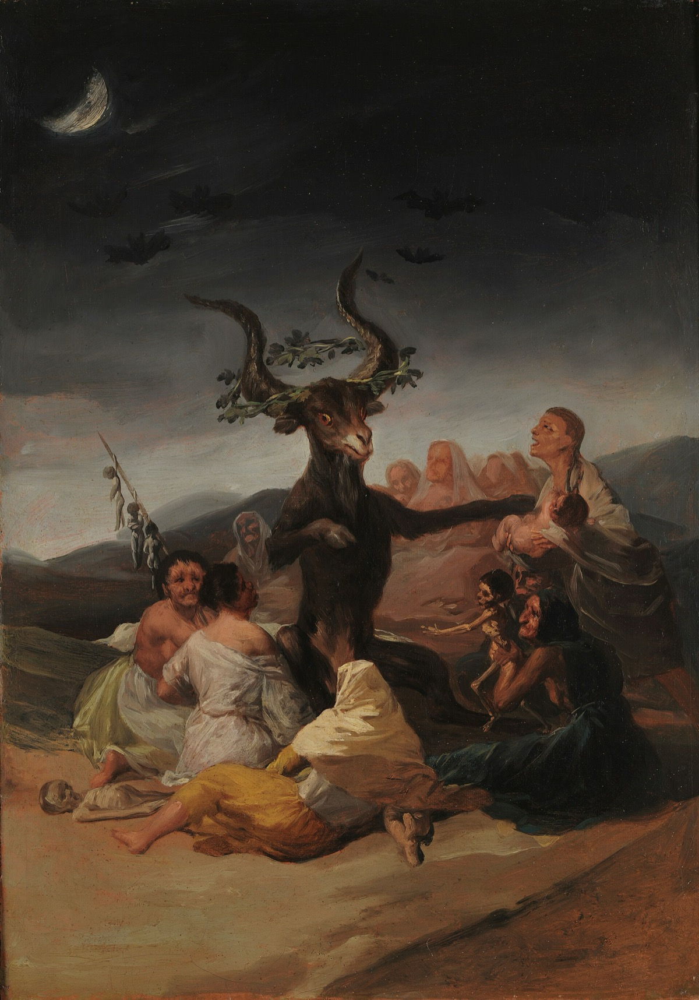
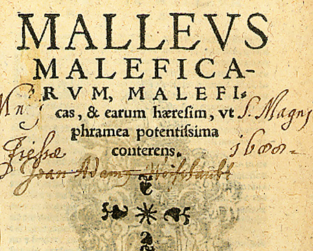
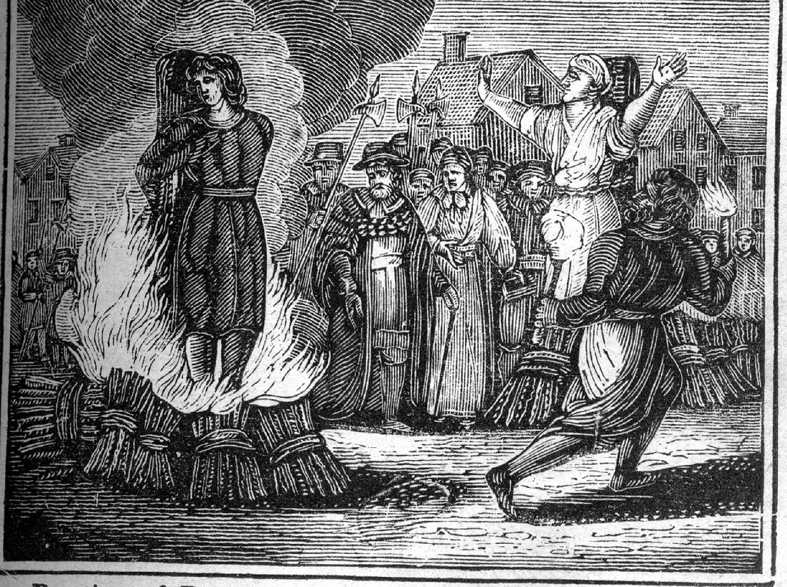
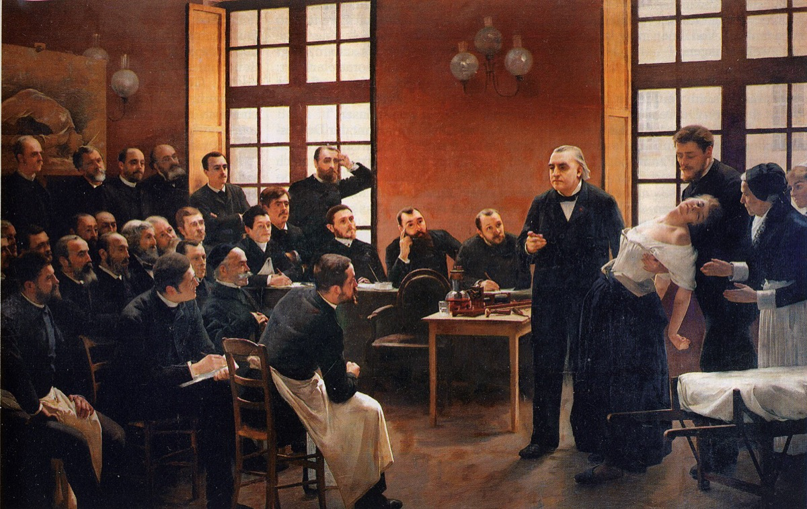

“The finest trick of the Devil is to persuade you that he does not exist.”Charles Baudelaire
In the winter of 1976, in the Bavarian town of Klingenberg, a twenty-three-year-old student named Anneliese Michel starved to death weighing fifty-five pounds. Over the preceding ten months she had endured sixty-seven rites of exorcism. She had been diagnosed years earlier with temporal-lobe epilepsy and severe depression; she had also, in the conviction of her family and two priests, been inhabited by demons who named themselves Lucifer, Cain, Judas, Nero, and Hitler. Both things were true at once — and the gap between them is the subject of this chapter.
The case of Anneliese Michel is not an exotic relic. Possession is one of the most widespread and durable beliefs in human history, documented on every inhabited continent and in nearly every religious tradition. It is also a recurring clinical reality: people do enter states in which they speak in altered voices, claim foreign identities, convulse, and lose all memory of what they have done. The enduring question is not whether these states are real — they unmistakably are — but what they are. This chapter holds the supernatural account and the clinical account side by side, takes both seriously as data about the human mind, and shows you precisely where each one ends.
The demon is always, at minimum, a true report about a human being in extremity. The disagreement is only about its address.
Historical BackgroundA Story Older Than History

Belief in possessing spirits is older than writing. The earliest Mesopotamian medical tablets attribute seizures and madness to invading demons — the gidim of the dead, the dreaded Lamashtu who stole infants — and prescribe incantations to expel them. Ancient Egypt, the Vedic texts of India, and Han-dynasty China all describe ritual specialists whose work was to drive out intruding entities. Possession, in other words, is one of humanity’s oldest theories of illness.
The Western demon as we know him is a layered fossil. The Hebrew Bible says strikingly little about possessing devils; the dramatic exorcisms enter with the Gospels, where casting out demons is among Jesus’s defining acts. Early Christianity inherited and systematised this, absorbing Persian dualism — a cosmos split between light and dark — and the Greek daimon, which had once meant a neutral guiding spirit and was steadily blackened into the demon. By the late Middle Ages, theologians had built an entire bureaucracy of Hell — and, with the Malleus Maleficarum of 1486 and the new power of the printing press, a machinery for finding its agents among the living.
- c. 1700 BCEMesopotamian diagnostic tablets ascribe epilepsy (antashubba, “the falling disease”) to specific named demons.
- c. 400 BCEThe Hippocratic text On the Sacred Disease argues epilepsy is no more divine than any other illness but arises in the brain — the first recorded naturalistic dissent.
- 1st c. CEGospel exorcism narratives make demon-expulsion central to Christian identity.
- 1486Malleus Maleficarum fuses possession, witchcraft, and heresy into a single prosecutable crime; the press spreads it across Europe.
- 1614The Catholic Rituale Romanum codifies the Rite of Exorcism — including cautions to rule out natural illness first.
- 1880sCharcot and the Salpêtrière school reinterpret the “demoniacs” of art and history as cases of hysteria.
- 1999The Vatican revises the Rite for the first time since 1614, strengthening the demand that medical and psychiatric causes be excluded first.

The 1614 Rituale Romanum already instructed exorcists not to mistake illness for possession, listing signs such as speaking unknown languages and displaying strength beyond one’s years. The 1999 revision went further, directing that “the exorcist must not proceed unless he is morally certain that the one to be exorcised is truly possessed,” and that physicians be consulted. The institution most associated with demons built skepticism into its own rulebook.
Scientific UnderstandingWhat the Clinic Sees
Confronted with a person who growls in a stranger’s voice, contorts violently, and afterward remembers nothing, modern medicine does not reach for a single explanation. It reaches for a differential diagnosis — a ranked list of conditions that can each produce these signs. Several map onto the classic picture of possession with uncanny precision.
In dissociative identity disorder (DID) and the closely related dissociative trance / possession disorder, the sense of a unified self fragments. A person may manifest distinct “alters” — autonomous identities with their own voices, postures, and gaps in memory.1 Crucially, in many cultures these alters present as spirits or demons, because that is the only framework available. The DSM-5 explicitly recognises “possession-form” dissociative identity, distinguishing pathology from culturally sanctioned trance.2
Seizures originating in the temporal lobes can produce sudden terror, automatic movements, religious or mystical sensation, the felt presence of an alien being, and complete amnesia afterward. For most of history these were the “falling sickness,” read as divine or demonic. Anneliese Michel’s documented epilepsy sits squarely here.
Command hallucinations and delusions of control (schizophrenia), the involuntary outbursts and coprolalia of Tourette syndrome, and the violent agitation, hallucinations, and seizures of anti-NMDA-receptor encephalitis — a disease only described in 2007 — have all, in hindsight, almost certainly been mistaken for possession. Susannah Cahalan’s memoir Brain on Fire records a doctor noting that a century earlier she would simply have been called possessed.

The mechanisms beneath dissociation remain genuinely contested. How alters form, whether DID is primarily generated by trauma or partly shaped by suggestion and therapy, and why some brains dissociate while others do not — these are open research questions, not settled facts. Honesty requires saying so.
Psychological InterpretationWhy the Mind Builds a Demon
Suppose we accept that no spirit literally enters the body. A deeper puzzle remains: why does the suffering mind so reliably produce this particular form — a separate, malevolent, named personality — rather than some other? The answer reveals something profound about how selves are made.
First, the brain is built to detect agents. Our ancestors who assumed the rustle in the grass was a predator out-survived those who assumed it was the wind; we are the descendants of the nervous ones. The cognitive scientist Justin Barrett named this the hyperactive agency detection device — a mind primed to see intention everywhere, even within itself.3 When alien impulses, intrusive thoughts, and uncontrollable movements arise from one’s own brain, the agency detector does what it always does: it posits a someone.
Second, possession can serve as an idiom of distress — a culturally legible way to voice the unspeakable. Anthropologists note that possession episodes cluster among the relatively powerless, and frequently give voice to exactly the grievances the sufferer could never otherwise say aloud. The demon can refuse a marriage, condemn an abuser, demand the rest that mere exhaustion could never justify. The condition is real; it is also, sometimes, the only available language.
A great many demons have asked, in borrowed and terrible voices, for nothing more monstrous than to be heard.
At an Ursuline convent in Loudun, France, an entire community of nuns began convulsing, blaspheming, and claiming demonic possession. The accusation fell on a charismatic local priest, Urbain Grandier, who was tortured and burned at the stake. Modern historians — most famously Aldous Huxley in The Devils of Loudun — read the episode as a fusion of mass psychogenic illness, sexual and political repression, and judicial murder dressed in theology. It is a near-perfect specimen of how private suffering, collective suggestion, and power can crystallise into a public demon.
Possession often spreads. In mass psychogenic illness (once called “mass hysteria”), symptoms with no physical cause propagate through a group by anxiety and observation. Outbreaks are documented in modern factories, schools, and — in trance-and-possession form — in studies from Nepal, where an episode in one adolescent can rapidly seed others in the same classroom.4 The British Journal of Psychiatry has catalogued its “protean” recurrence across centuries: the dancing plagues of medieval Europe, convent epidemics, and contemporary outbreaks are, structurally, the same phenomenon in the costume of its era.5
Cultural ContextNot Always a Catastrophe

The Western image of possession is overwhelmingly negative — invasion, violation, evil. But this is a parochial view. Across much of the world, possession is sought, sacred, and benevolent.
In Haitian Vodou, to be “mounted” by a lwa is an honour and a service to the community. In the Zār cults of Ethiopia and Sudan, in Brazilian Candomblé, in Korean shamanic gut rituals, and in countless local traditions, trance-possession is a structured, valued role — often the very entry into spiritual leadership. The same neurological capacity that, framed as illness, produces a tormenting demon can, framed as blessing, produce a healer.
This cultural variability is itself powerful evidence. If possession were a single disease entity, it would not so faithfully obey the theology of its host culture — Catholic demoniacs blaspheme against Christ, Hindu sufferers are seized by specific named bhūts, the spirits of the Zār want jewellery and perfume. The capacity appears to be human and universal; the content is always local. This is one of the clearest demonstrations in all of psychology that culture writes itself directly onto the nervous system.
Myth vs. RealityDrawing the Line Plainly
The Claim
An external, intelligent, malevolent spirit can enter a human body, control it against the person’s will, and be driven out only by ritual — and signs like “superhuman strength” or speaking unknown tongues prove its presence.
What the Evidence Shows
No controlled study has ever demonstrated an external agent. The reported signs have natural explanations: adrenaline and lost inhibition account for unusual strength; claims of unknown languages dissolve, on scrutiny, into fragments or gibberish. The states are real and often severe; the supernatural cause is unproven and, by its nature, untestable.
To call the supernatural cause “unproven and untestable” is not a sneer — it is a precise statement of its standing. Science can study the suffering, the brain states, the social dynamics, the outcomes. It cannot, even in principle, run an experiment on a being defined as undetectable. That boundary is exactly where the science label ends and the myth label begins. A responsible account neither claims to have disproven the demon nor pretends to have met him.
Ethical DebatesWhen Belief Becomes Dangerous
This is not a neutral curiosity. The framing of distress as possession has life-and-death stakes. Anneliese Michel died because epilepsy and depression were met with exorcism instead of medicine; her parents and two priests were convicted of negligent homicide. Children continue to be harmed or killed as alleged witches and demoniacs, prompting interventions by UNICEF and national governments. Yet dismissing a believer’s whole framework with contempt can sever the trust that makes treatment possible, and strip a sufferer of a meaning-system that, handled well, aids recovery. Many clinicians in religious communities now practise collaborative care — honouring the patient’s spiritual world while ensuring genuine medical conditions are actually treated. The ethical task is neither mockery nor surrender, but the harder discipline of holding compassion and evidence at once.
The danger was never that people believed in demons. It was that belief was allowed to occupy the chair reserved for diagnosis.
Modern RelevanceThe Demon Has Not Retired
It would be comforting to file possession under “the pre-scientific past.” The data refuse. Demand for exorcism has risen across several countries this century; the Catholic Church has expanded exorcist training, and Pentecostal deliverance ministries are among the fastest-growing religious movements on earth. The reasons are themselves psychological. In conditions of stress, helplessness, and rapid social change, an account that externalises evil — that locates the problem in a defeatable enemy and offers a decisive ritual of relief — is profoundly attractive. Possession endures for the same reason every chapter of this volume endures: because the human mind would rather face a named demon than a meaningless affliction. To understand that preference is to understand something central about our species.
Limits & Self-CriticismWhere Our Own Account Is Vulnerable
Intellectual honesty cuts toward the scientific story too. The clinical model is strong but incomplete: dissociation’s mechanisms are unresolved; the trauma account of DID is robustly supported in some studies and challenged in others; and the very category of “possession disorder” risks pathologising experiences that, in their own cultural context, are healthy and functional. There is a real danger of medical imperialism — assuming the Western clinic holds the only valid description of a Haitian lwa ceremony. The most defensible position is modest: psychology and neuroscience offer the best available explanation of these states, while anthropology insists we respect the meaning they carry. Neither, alone, is the whole truth.
The lines worth carrying out of this chapter.
- The states are real; the cause is the question. People genuinely speak in other voices, convulse, and forget — the dispute is only about whether the source is a spirit or the self.
- The mind builds a demon because it is built to find agents — and because, for the powerless, a demon can say what the person never could.
- The capacity is universal; the content is always local. Possession faithfully obeys the theology of its culture — proof that culture writes itself onto the nervous system.
- Science can study the suffering, not the spirit. An undetectable being cannot be tested; that is exactly where evidence ends and belief begins, and an honest book says so.
- The danger was never the belief. It was letting belief take the chair reserved for diagnosis — as it did, fatally, for Anneliese Michel.
The demon is, at minimum, a true report about a human being in extremity. To understand him is not to believe in him — it is to refuse to look away from the person he speaks for.
Research ReferencesSources & Notes
- ScienceFerracuti, S. & Sacco, R. — clinical and Rorschach findings in persons reporting demon possession treated by exorcism, identifying dissociative trance disorder (PubMed PMID 8667145).
- ReferenceAmerican Psychiatric Association, DSM-5 (2013): Dissociative Identity Disorder (possession-form) and Dissociative Trance.
- DebatedBarrett, J. L., Why Would Anyone Believe in God? (2004) — the hyperactive agency detection device.
- ScienceSapkota, R. P. et al., mass psychogenic illness as trance/possession attacks in Nepal, Frontiers in Psychiatry.
- ScienceBartholomew, R. E. & Wessely, S., “Protean nature of mass sociogenic illness,” British Journal of Psychiatry (2002).
- HistoryKramer, H. & Sprenger, J., Malleus Maleficarum (1486); Catholic Rituale Romanum (1614, rev. 1999).
- HistoryHuxley, A., The Devils of Loudun (1952); de Certeau, M., The Possession at Loudun.
Citations are illustrative of the evidence base for this chapter; a production edition would carry full bibliographic apparatus and DOIs, externally verified.
Going FurtherRecommended Books & Documentaries
Read
- Susannah Cahalan, Brain on Fire (2012)
- Aldous Huxley, The Devils of Loudun (1952)
- I. M. Lewis, Ecstatic Religion (1971)
- Bessel van der Kolk, The Body Keeps the Score (2014)
Watch
- The Exorcist (1973) — cultural touchstone, viewed critically
- Documentaries on temporal-lobe epilepsy & on the Anneliese Michel trial
- Ethnographic film on Haitian Vodou & Zār ceremonies